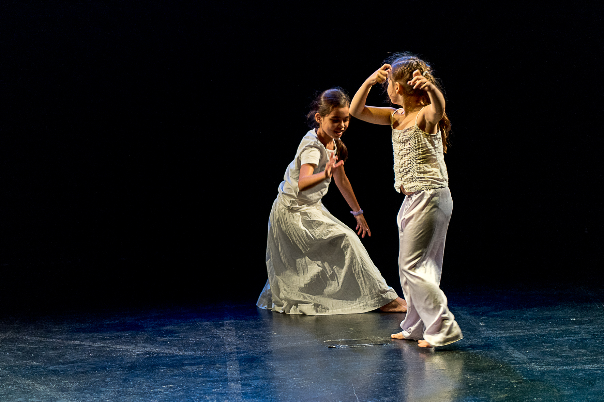
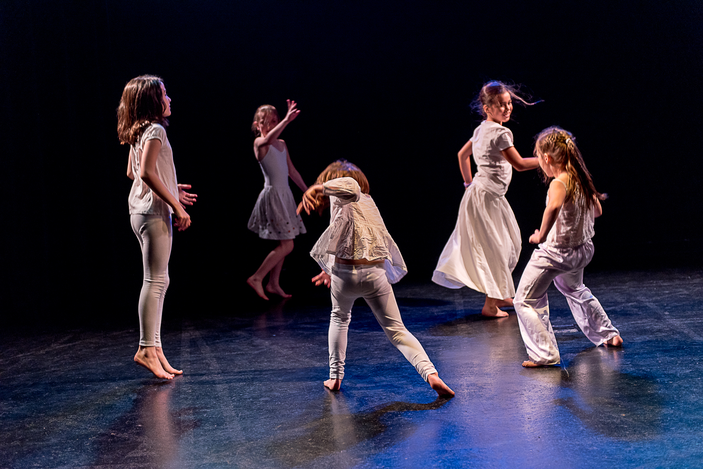

C’est une soirée ou différents groupes de danse convergent et partagent le plateau
scénique. L’idée d’organiser ce moment de « partage » est née de la conviction que la danse peut être un moyen
de communication et de lien considérable, comme disait Katherine Dunham : « la danse es un acte social »
avant qu’une technique.
« La danse nous appartienne à toutes et à tous », cette soirée veut souligner le fait que la danse est accessible au plus grand nombre et que en dansant ensemble nous avons la possibilité, si on veut, de changer profondément notre rapport au monde, aux autres et à nous-mêmes.
Dans cette espace-temps scénique nous allons pouvoir observer et ressentir les propositions différentes de chaque groupe, mais le commun dénominateur ce sont les individus en état de danse, avec ses propres histoires, son unicité, ses élans et propositions.
C’est une soirée unique parce-que, pour la première fois dans l’année, les trois groupes se retrouvent en dansant pendant l’AtelierPartagé pour ensuite aller sur scène… et c’est vous, les spectateurs et spectatrices qui seront témoins de ces rencontres en mouvement.
Sortir de la dichotomie « homme/femme, Amérique/Europe, Bolivie/France, traditionnel/contemporain. Questionner les limites et les frontières, jouer avec… On se permet de déconstruire des codes des danses traditionnelles pour trouver des résonances intimes.